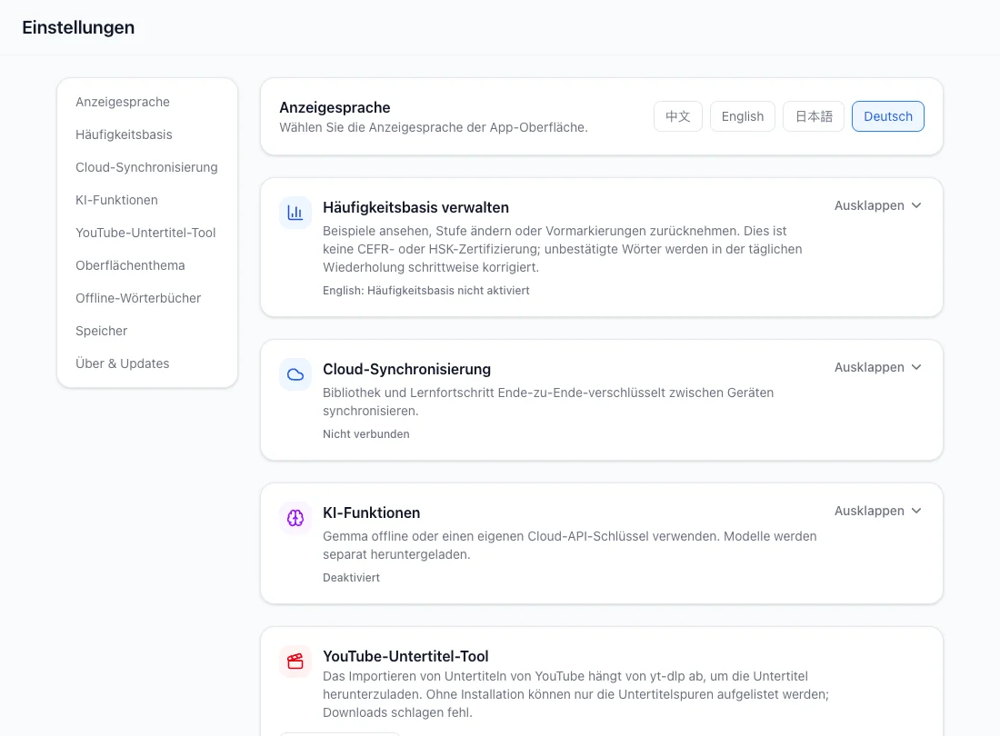
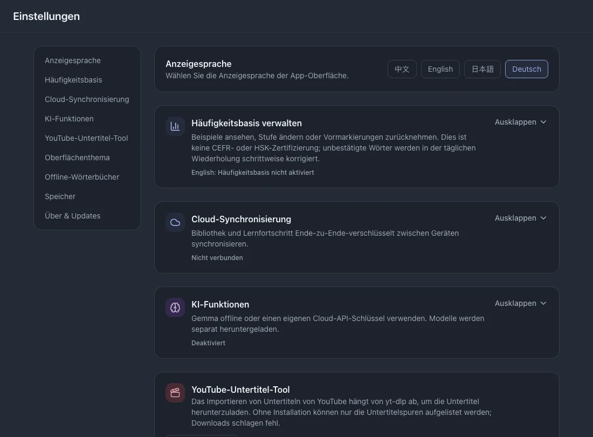

Einstellungen
Hier findest du die Einstellungen der installierten App. Optionale Online-Funktionen werden getrennt vom lokalen Lesen, Nachschlagen und Wiederholen eingerichtet.
Auf dieser Seite
Oberflächensprache
Wähle Englisch, Chinesisch, Japanisch oder Deutsch. Das ändert Beschriftungen, nicht die Lernsprache deiner Untertitel.



Häufige Wörter als Grundlage
- Öffne die Häufigkeitseinstellung und wähle Englisch oder Chinesisch.
- Wähle einen Bereich von 1.000 bis 10.000 Wörtern, prüfe die Vorschau und übernimm den Bereich, den du bereits kennst.
- Nutze bei Bedarf die Rücknahme und lies vorher die Bestätigung.
Cloud-Synchronisierung
Die Synchronisierung ist optional und benötigt Internet. Lernaufzeichnungen werden vor der Übertragung verschlüsselt; bewahre den ausgegebenen Wiederherstellungscode auf.
- Öffne die Cloud-Synchronisierung und registriere dich oder melde dich an.
- Verwende auf dem anderen Gerät dasselbe Konto, synchronisiere und prüfe den Status. Automatische Synchronisierung lässt sich gesondert aktivieren.
Siehe auchSichern und wiederherstellen
KI-Analyse
- Aktiviere KI und wähle lokales Gemma oder eine Cloud-API.
- Lade für lokale KI ein kompatibles Modell herunter oder importiere es und wähle es aus. Der Download benötigt Internet; danach läuft die Inferenz lokal.
- Konfiguriere für Cloud-KI Dienstadresse, eigenen API-Schlüssel und Modell und prüfe die Verbindung. Ausgewählter Text wird an diesen Anbieter gesendet.
Siehe auchKontext und Wendungen verstehen
YouTube-Import
Prüfe hier den Werkzeugstatus. Auf dem Desktop können yt-dlp und Laufzeitabhängigkeiten nötig sein; folge den Plattformhinweisen der App.
Browser-Sitzungen sind optional und plattformabhängig. Nutze sie nur, wenn die Quelle eine angemeldete Sitzung erfordert.
Siehe auchYouTube-Untertitel abrufen
Thema
Wähle ocean, sage, twilight, amber oder midnight. Das Thema ändert die Darstellung, nicht deine Lerndaten.
Wörterbücher
- Öffne die Wörterbuchverwaltung und prüfe installierte Quellen und Sprachen.
- Importiere bei Bedarf ein kompatibles Wörterbuchpaket. Das Entfernen einer Quelle verändert verfügbare Definitionen; lies die Löschbestätigung.
Speicher
Öffne den Speicherbereich, um die Belegung der Daten und Komponenten zu sehen. Sichere die Bibliothek vor Löschaktionen.
Siehe auchSichern und wiederherstellen
App-Updates
Prüfe in den Einstellungen auf Updates. Folge bei einer neuen Version der auf deiner Plattform angebotenen Installation oder dem Download.